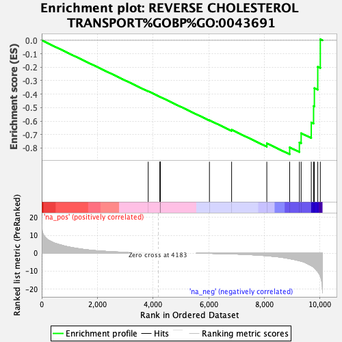
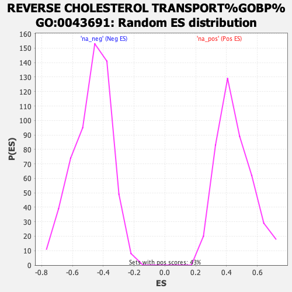

| | | Dataset | CRC_ranked_genelist.rnk |
| Phenotype | NoPhenotypeAvailable |
| Upregulated in class | na_neg |
| GeneSet | REVERSE CHOLESTEROL TRANSPORT%GOBP%GO:0043691 |
| Enrichment Score (ES) | -0.8465272 |
| Normalized Enrichment Score (NES) | -1.7834888 |
| Nominal p-value | 0.0 |
| FDR q-value | 0.086196125 |
| FWER p-Value | 0.525 |
Table: GSEA Results Summary

Fig 1: Enrichment plot: REVERSE CHOLESTEROL TRANSPORT%GOBP%GO:0043691
Profile of the Running ES Score & Positions of GeneSet Members on the Rank Ordered List
| SYMBOL | RANK IN GENE LIST | RANK METRIC SCORE | RUNNING ES | CORE ENRICHMENT | | 1 | APOA1 | 3826 | 0.114 | -0.3779 | No |
| 2 | APOA2 | 4252 | 0.000 | -0.4201 | No |
| 3 | APOA4 | 4253 | 0.000 | -0.4201 | No |
| 4 | APOC2 | 4257 | 0.000 | -0.4204 | No |
| 5 | APOC3 | 4258 | 0.000 | -0.4204 | No |
| 6 | APOE | 6026 | -0.135 | -0.5936 | No |
| 7 | CETP | 6823 | -0.498 | -0.6644 | No |
| 8 | APOM | 8088 | -1.500 | -0.7651 | No |
| 9 | ABCG1 | 8909 | -3.125 | -0.7949 | Yes |
| 10 | LCAT | 9258 | -4.284 | -0.7587 | Yes |
| 11 | ABCA1 | 9322 | -4.532 | -0.6901 | Yes |
| 12 | CLU | 9685 | -7.004 | -0.6103 | Yes |
| 13 | CES1 | 9768 | -7.868 | -0.4884 | Yes |
| 14 | ABCA5 | 9797 | -8.239 | -0.3551 | Yes |
| 15 | LIPG | 9918 | -10.327 | -0.1964 | Yes |
| 16 | LIPC | 10010 | -12.904 | 0.0077 | Yes |
Table: GSEA details [plain text format]

Fig 2: REVERSE CHOLESTEROL TRANSPORT%GOBP%GO:0043691: Random ES distribution
Gene set null distribution of ES for REVERSE CHOLESTEROL TRANSPORT%GOBP%GO:0043691